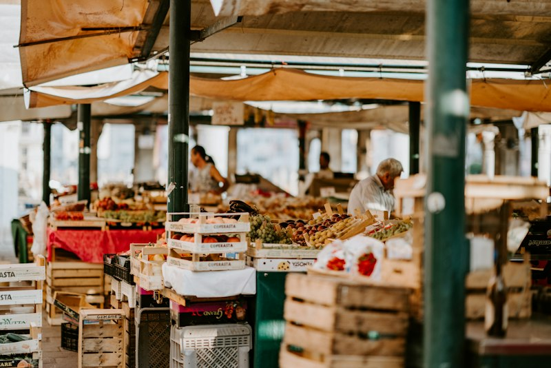

PLACES TO DISPOSE
지금 방문하기 좋은 클린 스팟
관광 동선 가까이에서 운영 중인 장소만 골라 보여드립니다.


가까운 배출 장소와 품목별 방법을 확인하고
여행의 마지막 장면까지 가볍게 남겨보세요.
Travel well. Leave lightly.
현재 위치에서 도보로 갈 수 있는
운영 중 클린 스팟을 우선 안내합니다.
페트병·캔·유리·비닐 등
제주 기준 배출 방법을 보여줍니다.
금전 보상 없이 개인 기록과
월간 랭킹으로 참여를 이어갑니다.
관광 동선 가까이에서 운영 중인 장소만 골라 보여드립니다.

쓰레기가 생긴 순간부터 올바르게 버리는 순간까지
관광객의 동선을 방해하지 않도록 설계했습니다.
금전 보상 없이 개인 기록과 월간 순위로 참여를 이어갑니다.
07
올바른 배출
05
찾은 장소
72
여행 XP
최근 기록 · 함덕해변 페트병 분리배출 · 오늘 14:32
품목명으로 검색하면 제주 지역 기준 배출 방법과 가까운 장소를 함께 안내합니다.
내용물을 비우고 헹군 뒤, 라벨을 제거해 투명 페트병 전용 수거함에 넣어주세요.
검색한 위치 정보는 결과 제공 후 저장하지 않습니다.
남은 음료와 이물질을 완전히 제거합니다.
라벨과 뚜껑은 재질에 맞는 수거함에 따로 버립니다.
지도에서 현재 이용 가능한 전용 수거함을 확인합니다.